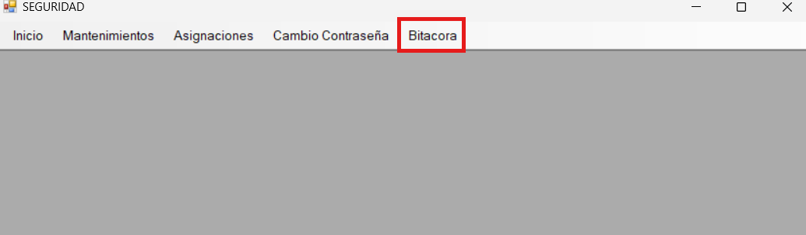
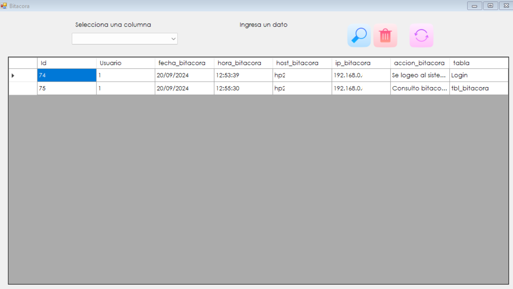
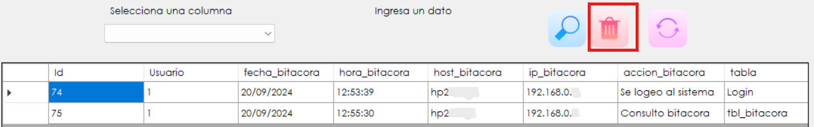

Para entrar al formulario dar clic en la pestaña Bitácora.
El formulario consta de los botones Buscar, Borrar filtros y Actualizar.
Para buscar un dato o fila en específico, dar clic donde indica la flecha roja, y escoger la opción por la cual se desea filtrar la búsqueda.

Luego, dependiendo la opción escogida, se habilitará un campo en donde se debe especificar lo que se desea buscar. Por último, presionar el botón de Buscar.
Por ejemplo:
Para quitar los filtros que fueron indicados al momento de realizar un búsqueda específica, presionar el botón de Borrar filtros. De esta manera, la ventana regresará a su estado inicial.
Para actualizar la ventana y poder visualizar todas las acciones que se han realizado en el sistema y han sido registradas en la bitácora, oprimir el botón Actualizar.